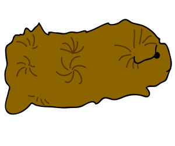

There are so many different types of guinea pigs! Short hair, long hair, soft hair, rough hair, take a look! Here is the general information about the breed. Links are provided if you want even more information.
Note that not all guinea pigs are the same. Some are mixed breeds so they can have more than one identifying trait. Use this page to identify which your piggie is.
Abyssinian

Identifying Feature
This type is most known for its 8 to 10 rosettes of hair around their body. A rosette is how the hair looks like it is growing out in a swirl.
This types identifying feature is its dense coat, meaning it has a lot of hair making it look much softer! This factor plus the shape of the guinea pig is where this type got the name Teddy.
This types identifying feature is the white mark on their heads that look like a white crest, or a crown. This type looks like the American guinea pig, but is so much rarer.

 Identifying Feature
Identifying Feature